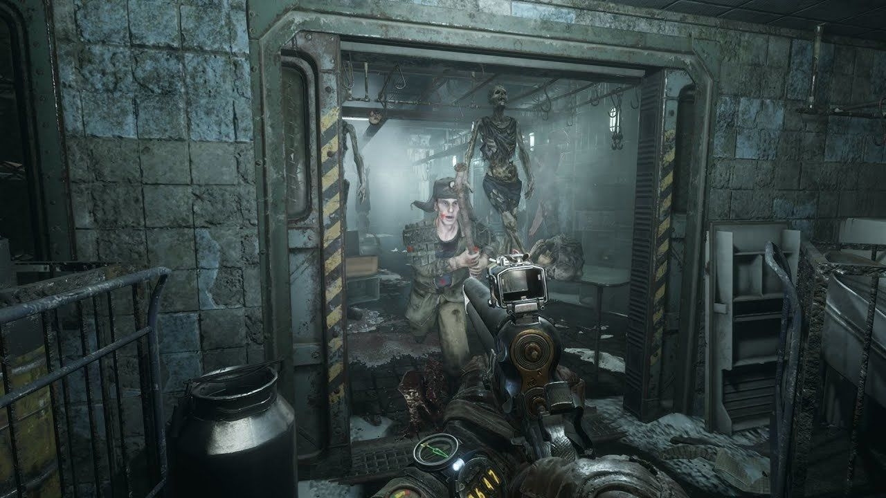
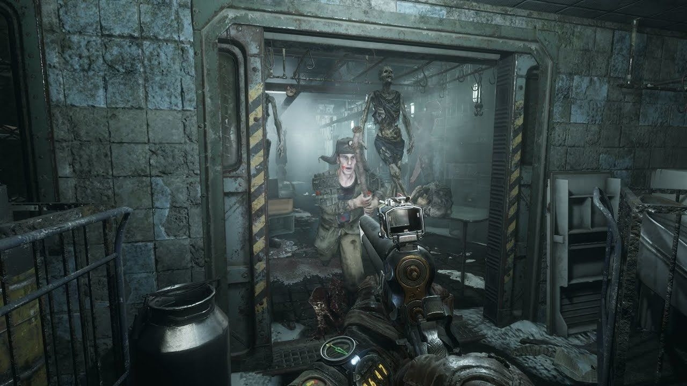

Ігровий процес
Metro Exodus, як і попередні ігри серії, є шутером від першої особи з елементами survival horror і стелс-екшн. Дії відбуваються на постапокаліптичних просторах колишньої Російської Федерації, де гравець в ролі молодого чоловіка Артема мусить давати собі раду з новими небезпеками світу й брати участь у боротьбі проти мутованих істот, а також вороже налаштованих людей. В цій грі перевага належить просторам на поверхні, а не тунелям і станціям метро. Вони включають як лінійні локації, так і відкриті, де існує кілька альтернативних шляхів до мети. На відміну від Москви, де відбувались події попередніх ігор, в Metro Exodus дія розгортається в різних регіонах, де є різний рівень радіаційного забруднення, місцеві фракції вцілілих та мутанти. В той же час іноді вимагається носити протигаз, слідкуючи за зношеністю його фільтра. Більшість подорожей відбуваються на паротязі «Аврора», де можна поспілкуватися з іншими персонажами, дізнатися деталі ігрового світу. Кожен персонаж після проходження чергової місії отримує нові діалоги. Артем володіє арсеналом вогнепальної та іншої зброї, яку можна вдосконалювати такими модулями, як магазини, приціли, глушники тощо. Вдосконалення та витратні матеріали, такі як фільтри для протигаза й аптечки, можливо виготовити самотужки. Для цього слід збирати деталі та хімікати. Предмети першої необхідності виготовляються в рюкзаку. Складніші предмети, наприклад, набої та гранати, створюються на спеціальних верстаках. Крім того зброю необхідно час від часу чистити, інакше вона заклинюватиме в бою. Торгівля в цій грі відсутня. У грі подано суміш лінійних рівнів і відкритих локацій, доступних для дослідження гравцем. Також є динамічна система погоди, цикл зміни дня й ночі, зміна пір року в міру того, як просувається історія. Це вливає на геймплей, наприклад, вдень Артема легше помічають люди, але зустрічається менше мутантів. Під час зливи або піщаної бурі легше переховуватись. Кілька годин дозволяється пропустити, поки Артем умовно спить або відпочиває біля багаття. Як і раніше, гра враховує моральність вчинків героя. Так, утримуючись від убивств людей, Артем здобуває схвалення своїх товаришів, що впливає на фінал.
сюжет гри
Події починаються наприкінці зими 2035 року. Бункер Д-6 вдалося захистити від комуністів «Червоної лінії», Артем пішов з ордена «Спарта» і одружився з Анною — донькою полковника Мельника. Сам Мельник тепер ходить на протезах, оскільки втратив ноги в битві. Артему не дає спокою спогад про сигнал, який він чув на верхівці Останкінської телевежі. Він вважає, що сигнал надходив з-за меж Москви і москвичі не єдині вцілілі. Кілька разів Артем здійснює вилазки на поверхню в надії знову зафіксувати сигнал, що Анна і Мельник вважають марною затією.
Під час чергової вилазки Артем зазнає нападу мутантів, його рятують бійці «Спарти» на прізвиська Князь, Дамір, Альоша та Ідіот. Вони доставляють пораненого Артема на станцію «ВДНГ». Анна просить його більше не виходити на поверхню, згодом Артем видужує, а навколишні відмовляють його від пошуків людей за межами міста. Проте через тиждень Артем переконує Анну ще раз вилізти на поверхню, де вони бачать паротяг. Обох схоплюють бійці «Ганзи» та везуть у фургоні на «Щербинку». З ними також їдуть бабуся з молодим хлопцем, які розповідають, що прибули з підмосковного села. Анна в шоці від того, що Артем був правий, що вціліла не лише Москва. Бійці розстрілюють полонених, але Артем дивом виживає завдяки жетону Хантера, що зупинив кулю. Знайшовши спорядження, герой знову натрапляє на потяг і слідує за ним до депо «Ганзи».
Артем зустрічає машиніста Єрмака, котрий каже, що Анна жива і перебуває в полоні. Машиніст відволікає солдатів, поки Артем проникає в командний центр, де знаходить Анну. В сутичці з охоронцями випадково знищується апаратура, командир пояснює, що тепер вся Москва під загрозою. Адже ці пристрої заглушували всі радіопередачі навколо, щоб приховати існування в місті вцілілих. Так само знищувались усі прибулі з-за меж столиці. Світова війна все ще триває, частина Росії окупована НАТО, котра може завдати повторного ядерного удару. Артем з Анною та Єрмаком захоплюють паротяг, коли їх наздоганяє Мельник з загоном, який повідомляє — тепер на них чекає розстріл за порушення таємниці. Мельник приєднується зі своїми товаришами до пасажирів потяга і тікає з міста. Бійці «Ганзи» переслідують утікачів на власному бронепотязі, тоді Артем проникає до їхнього вагону і здійснює диверсію. Артем, Анна, Мельник, а також Князь, Дамір, Альоша, Ідіот та Сем успішно покидають місто.
На віддалі від Москви виявляється нормальний радіаційний фон і чисте повітря. Артем вловлює сигнал з бункера «Ковчег», розташованого в Ямантау. Мельник вважає, що там переховується уряд і тільки вони можуть домогтися дозволу на повернення в Москву. Група дає паротягу назву «Аврора» та їде до Ямантау.
Навесні «Аврора» ламається через барикади місцевих бандитів на колії біля Волги. Після бою Артем вирушає на пошуки деталей та на човні дістається до церкви. Там проживає секта Електроборців на чолі з отцем Силантієм, яка проповідує відмову від техніки та поклоняється сому-мутанту Цар-рибі. Артем знаходить захоплених сектою медсестру Катерину та її дочку Настю. Артем відправляє їх на «Аврору» і Катерина розповідає про механіка Хреста, що живе неподалік. Він знаходить механіка, котрий ремонтує потяг, та рятує Анну, що впала до наповненого хімікатами підвалу. Після цього він за вказівкою Хреста викрадає у бандитів дрезину, щоб доставити до «Аврори» ще один вагон, де житимуть нові пасажири. Артем з Князем прориваються крізь охорону Силантія (або переконують їх пропустити) і «Аврора» вирушає далі. Князь, якщо Артем не захищав його, може тут загинути.
 

«Аврора» прибуває до «Ковчега», перед яким лежить численний покинутий транспорт. Мельника це не зупиняє, він вирушає всередину в супроводі Артема й Анни, сподіваючись зустріти міністра оборони. Але там виявляються канібали, що заманювали до себе жертв обманним сигналом. Бункер лишився недобудованим, тож його населяють лише деградовані робітники та солдати, які почали їсти людей після закінчення припасів. Коли канібали збираються вбити гостей, Сем та Ідіот рятують Артема разом з Мельником. Вони відбиваються від людожерів та знаходять Анну, яку місцевий лікар забрав на обстеження через її підозрілий кашель. Їм вдається розшукати відомості про центри супутникового зв'язку на Каспійському узбережжі та в Новосибірську, після чого успішно втекти
На «Аврорі» Мельник каже, що втікачам слід знайти нове місце для життя, котре не постраждало від війни та радіації. Потяг вирушає до центру супутникового зв'язку на Каспії, щоб взяти актуальні карти планети. Дорогою команда бореться з бандитами — власниками нафтових вишок на чолі з Бароном, які тримають інших людей у рабстві. Завдяки Артему вдається викрасти воду і паливо та допомогти місцевій бунтарці Гюль повалити владу Барона. Виявляється, мати Гюль працювала в центрі супутникового зв'язку. Дамір, якщо він схвалюватиме дій Артема (відмова рятувати рабів та їх убивство), може лишитися з командою. Знайшовши карту, пасажири «Аврори» святкують весілля Степана й Катерини, та несподівано дається взнаки отруєння Анни, вона починає кашляти кров'ю. Анна згадує, що до війни в Новосибірську було розроблено ліки, котрі рятували від таких симптомів.
Команда дістається до лісистої долини, де колія обвалюється разом з дрезиною Хреста й Артемом. Героя рятує колишня піонервожата Ольга — лідерка колишніх жителів піонерського табору «піонерів», котрих тероризує ведмідь-мутант Хазяїн лісу та бандити. «Піонерам» протистоять «пірати», котрі вбивають усіх прибулих. Артема ловлять «пірати», та напад ведмедя дає шанс на втечу. Йому вдається розшукати загубленого Альошу та уникнути «піратів». Артем скидає ведмедя в прірву, але дізнається від Альоші, що скоро навколишня територія загине через руйнування греблі. Альоша радить Ользі покинути долину та обіцяє повернутися за нею. Якщо Артем убивав «піонерів» чи «піратів», Ольга буде розгнівана і Альошу поранять, а Ольга назве Артема божевільним.
Восени Анні гіршає, вдається тільки полегшити її стан, але не вилікувати хворобу. Добуті супутникові знімки показують, що Новосибірськ вкрай забруднений радіацією. Мельник з Артемом вирішують піти на пошуки ліків, поки інші знайдуть запчастини зі снігоочисником. Взимку потяг дістається до Новосибірська, тож Мельник з Артемом вирушають на пошуки ліків на спеціальному обшитому свинцем авто. Шлях виявляється заметеним снігом, вони спускаються в тамтешнє метро, де нещодавно скінчилась спустошлива громадянська війна. В метро не лишилось живих, крім мутантів і хлопчика Кирила. Той спочатку тікає, але потім розповідає про план свого зниклого батька вирушити в безпечне місце біля Байкала. Також хлопчик дає три ампули радіопротектора. Пройшовши тунелі та вулиці, наповнені мутантами, Артем майже доходить до лабораторії інституту екстремальної медицини з запасом ліків. Однак, він опромінюється, від чого починає бачити галюцинації та видіння минулого, тому використовує одну ампулу. Тим часом Кирило і Мельник добувають супутникові карти. Лабораторію населяють горили-мутанти, над якими ставилися досліди, Артем тікає від них і врешті знаходить кейс із ліками. На нього нападає мутант, поранений Артем зазнає важкого опромінення. Його рятує Мельник, віддавши свою ампулу, після чого помирає від радіації. Артем з Кирилом доїжджають до потяга, оснащеного снігоочисником.
Товариші переливають Артему свою кров, Анна виліковується і згодом «Аврора» доїжджає до Байкала. Там мандрівники і вирішують залишитись, але доля Артема залежить від його попередніх вчинків.
Додаткова інформація
Кінцівки
«Добрий фінал» — завдяки допомозі товаришів Артем виживає і очолює вцілілих. Мельника ховають з почестями. Артем розповідає про свої плани шукати інших вцілілих. Цей фінал вимагає, щоб принаймні двоє з Альоші, Князя й Даміра лишилися до фіналу в команді, а Альоша при цьому лишився здоровим. Для отримання «доброго» фіналу слід уникати вбивства людей на Волзі та в долині, а на Каспії також звільняти рабів.
«Поганий фінал» — Артему не вистачає крові для переливання, він помирає від опромінення. Його разом з Мельником ховають на березі Байкалу. Цей фінал настає, якщо сталося дві події з трьох: Князь загинув, Дамір лишився з Гюль, а Альошу було поранено бандитами.
Музика
У дебютному трейлері гри, представленому на виставці E3 2017, використано ремікс треку «In The House — In A Heartbeat» композитора Джона Мерфі із саундтрека до фільму «28 днів потому». 27 липня 2017 року композицію з трейлера опублікував видавець Deep Silver у відкритий доступ на Spotify, SoundCloud і YouTube.
Оцінки й відгуки
Прем'єра Metro Exodus на виставці E3 2017, стала несподіванкою для більшості гравців і в цілому анонс гри був сприйнятий позитивно. Тому Хоггинс з газети «The Daily Telegraph», назвав Metro Exodus одним з найбільш захоплюючих, нових анонсів" на всій виставці, так само, як і Ендрю Хейворд з журналу Stuff і Сем Прелл з GamesRadar. У той же час журнал PC World поставив Metro Exodus друге місце в десятці кращих ігор для ПК з представлених, а журнал Wired визнав трейлер гри одним з кращих з показаних.
Українська локалізація
Перед виходом гри розробники пообіцяли що гра матиме повноцінну офіційну українську локалізацію.[17] На відміну від їх попередніх двох ігор з серії «Metro», ця гра була локалізована українською самими розробниками без залучення зовнішніх суб-підрядників зі студії Шлякбитраф.
У релізній версії від 15 лютого 2019 року української локалізації не було. У своєму інтерв'ю українському гейм-виданню PlayUA у 2018 році розробники обіцяли, що постараються закінчити її до релізу але попередили що скоріше за все українська локалізація запізниться на кілька тижнів і буде доступна лише з першим патчем гри.[18] Згодом, 23 лютого 2019 року в своєму інтерв'ю SMNS Games Андрій Прохоров заявив що українська локалізація вийде найімовірніше у березні 2019 року.
Українська локалізація вийшла 26 березня 2019 року в складі патчу «The Ranger Update» 1.0.1.3.[